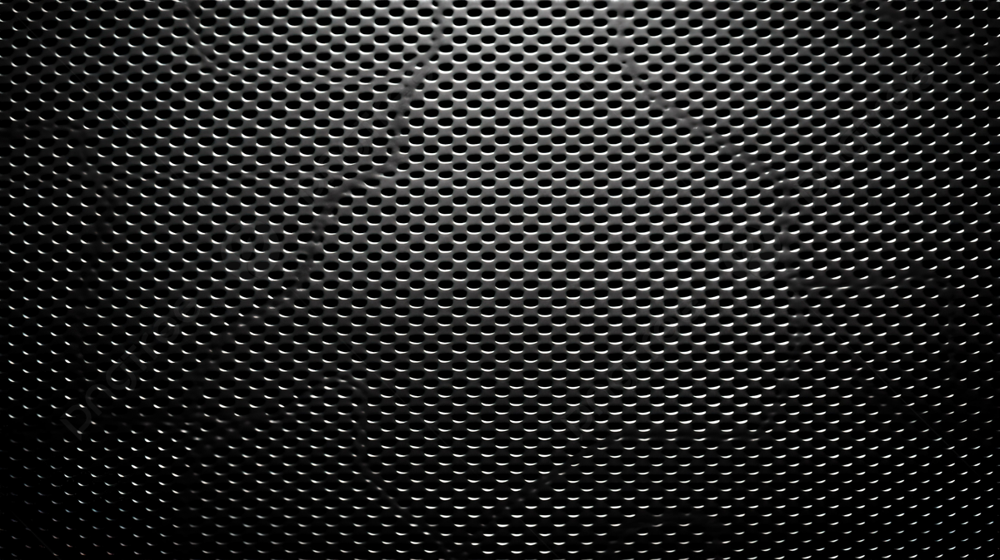

PROFIL ASN KELURAHAN PADANG TERUBUK
GALERI FOTO

BUKA PORTAL
SELAMAT DATANG PROFIL ASN KELURAHAN PADANG TERUBUK —
PELAYANAN ADMINISTRASI SI CEPAT SISTEMATIS CERMAT DAN CEPAT —
JAM PELAYANAN: SENIN–JUMAT 08.00–16.00 WIB
✕